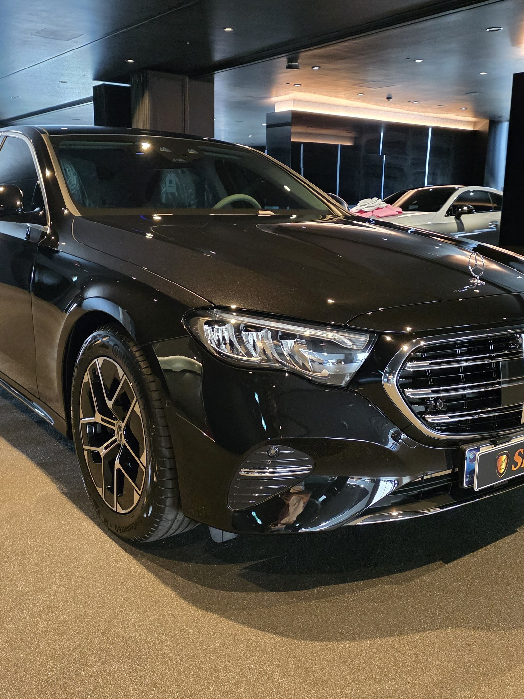
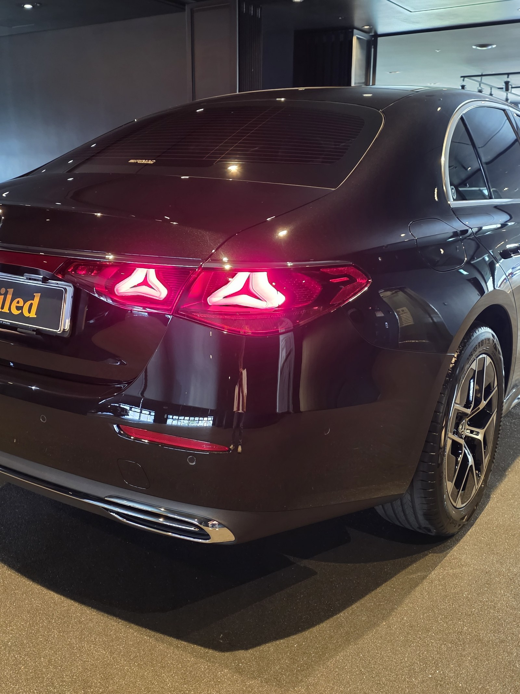
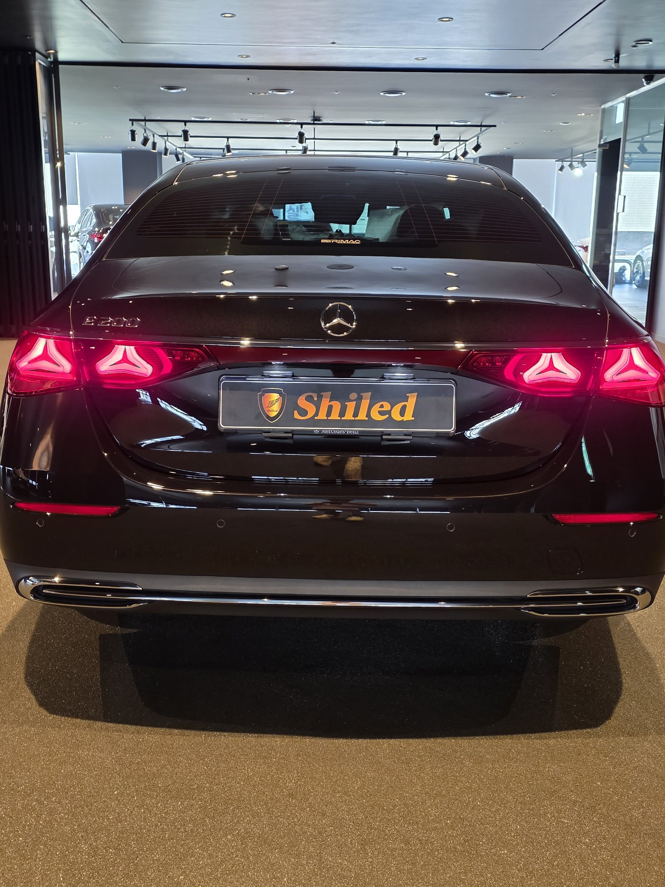
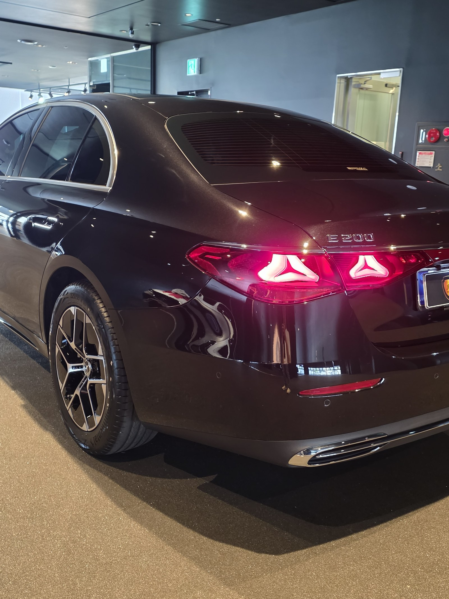
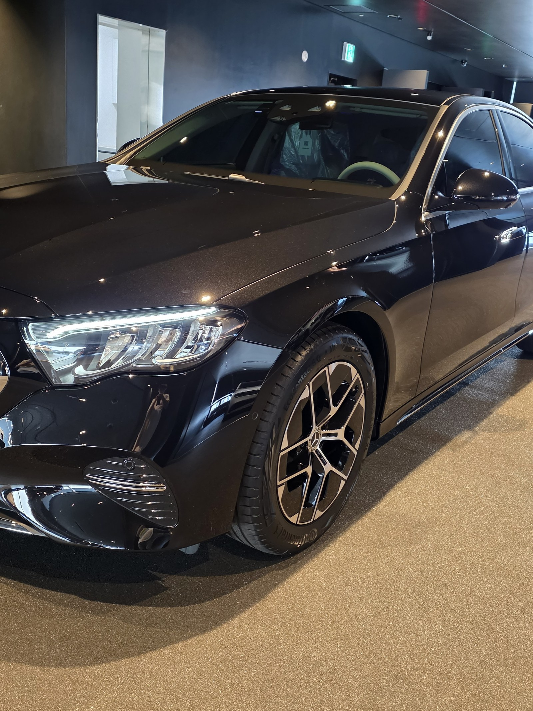
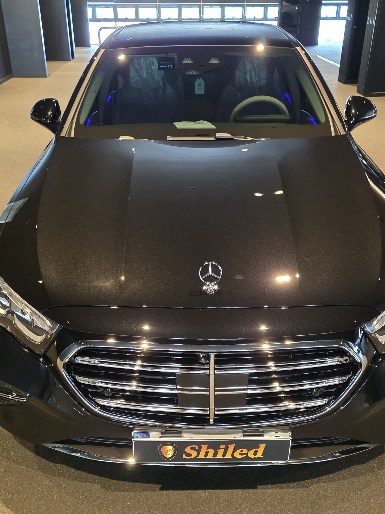
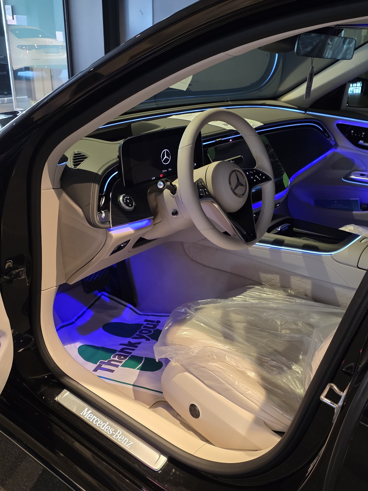
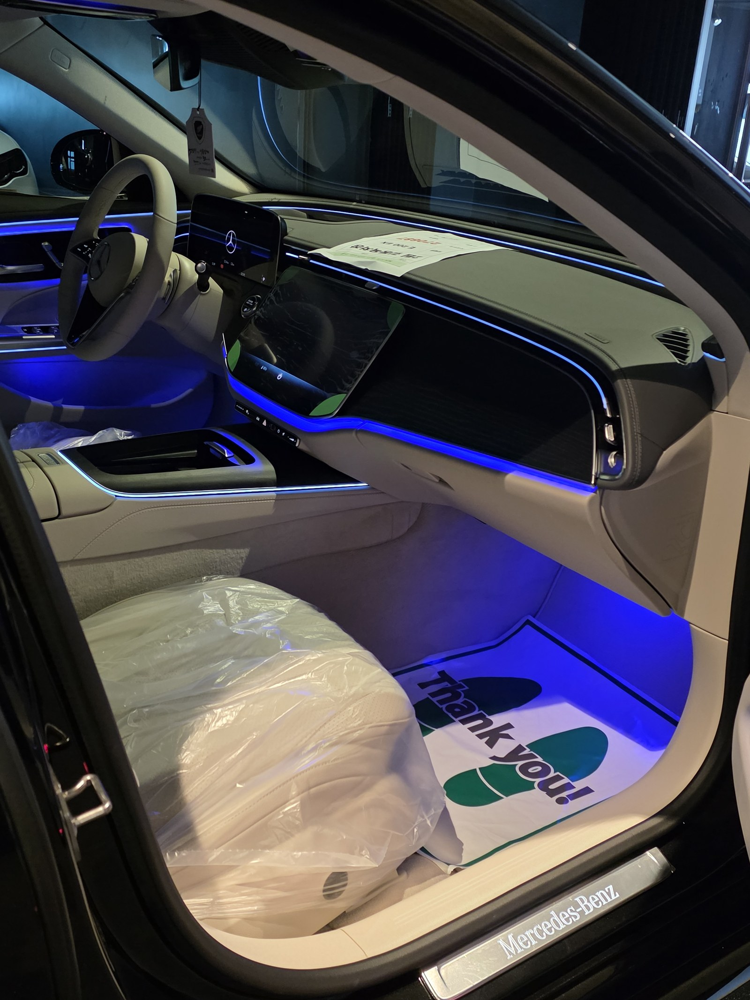
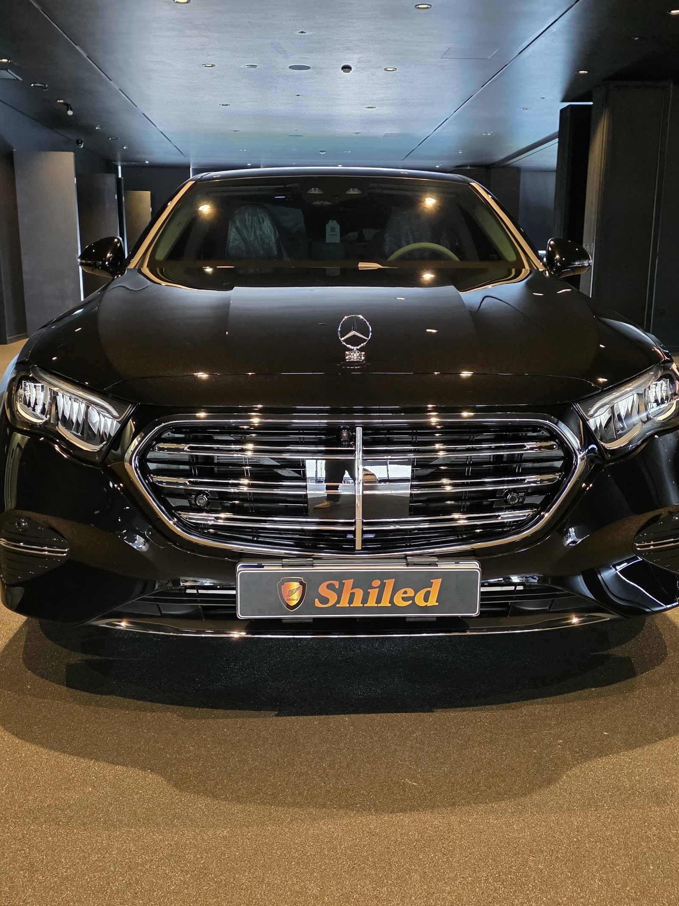
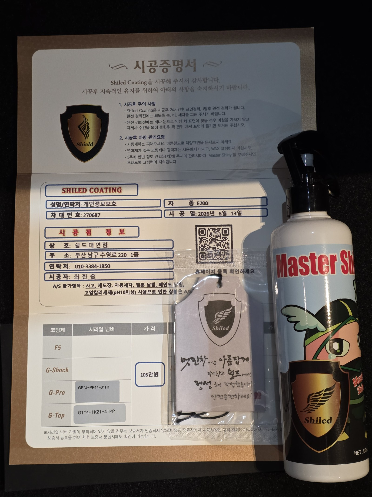

부산 벤츠 유리막코팅으로 만난 E200 블랙입니다. 아직 출고 전, 새 차입니다.
스크래치 내성과 발수를 함께 원하는 차주 요청에 맞춰 출고 전 듀얼코팅(G-PRO+G-TOP)으로 진행했습니다.

듀얼코팅은 어떤 조합인가요?
듀얼코팅은 G-PRO와 G-TOP을 함께 올리는 조합코팅입니다.
G-PRO의 스크래치 내성과 G-TOP의 발수·방오성을 동시에 얻을 수 있습니다. 관리와 보호를 모두 신경 쓰는 차주라면 부산 벤츠 유리막코팅 상담에서 이 조합을 가장 많이 문의합니다.

싱글코팅과 비교하면 무엇이 달라지나요?
경도와 방오성, 발수력이 모두 한 단계씩 올라갑니다.
G-PRO 단독보다 스크래치 내성은 유지하면서 발수·방오성이 크게 개선되고, G-TOP 단독보다 하드코팅 효과가 더해집니다. 코팅제는 대표가 화학공학 전공으로 직접 개발·제조한 제품입니다.

기술자의 팁
신차라고 바로 코팅을 올리지 않습니다. 운송·보관 중 묻은 미세 오염을 디테일링 세차와 탈지로 걷어낸 뒤에 올립니다. 깨끗한 바탕 위에 올려야 코팅이 제대로 밀착합니다.



실내 상태도 함께 확인합니다
출고 전 차량은 안팎 컨디션을 함께 정리합니다.
실내는 아직 시트와 트렁크에 보호 커버가 씌워진 신차 그대로입니다. 외부 도장은 듀얼코팅으로 마감하고, 실내까지 깨끗한 상태로 인도합니다.



시공증명서를 함께 드립니다
모든 시공 차량에 시공증명서를 드립니다.
차종·시공일·코팅제 시리얼 번호가 적혀 있고, 홈페이지에 QR코드로 등록해 보증을 받으실 수 있습니다. 이 차는 G-PRO와 G-TOP 두 코팅 시리얼이 함께 기록돼 있습니다.

차종·시공일·코팅제 시리얼이 기재된 시공증명서
자주 묻는 질문
Q. 듀얼코팅은 어떤 조합인가요?
A. G-PRO와 G-TOP을 함께 올리는 조합코팅입니다. 스크래치 내성과 발수·방오성을 동시에 얻을 수 있습니다.
Q. 싱글코팅과 비교하면 무엇이 달라지나요?
A. 경도·방오성·발수력이 모두 한 단계씩 올라갑니다. G-PRO 단독보다 발수·방오성이 개선되고, G-TOP 단독보다 하드코팅 효과가 더해집니다.
Q. 싱글·듀얼·트리플코팅은 어떻게 선택하나요?
A. 발색만 원하면 F5, 스크래치 내성만 원하면 G-PRO, 발수·방오만 원하면 G-TOP으로 충분합니다. 두 가지 이상 원하면 듀얼, 세 가지 모두 원하면 트리플코팅을 권합니다.
Q. 신차코팅도 전처리를 하나요?
A. 합니다. 운송·보관 중 묻은 미세 오염을 디테일링 세차와 탈지로 정리한 뒤 코팅을 올립니다.
Q. 쉴드광택 위치와 예약은 어떻게 하나요?
A. 부산 남구 유엔로220 1F 쉴드광택입니다. 예약·상담은 010-3384-1850, 대표 최한중이 직접 상담하고 책임 시공합니다.
새 차일수록 시작점이 다릅니다. 가장 깨끗할 때 입혀두십시오.
제품을 직접 만드는 사람이 직접 시공합니다.
부산에서 벤츠 신차 유리막코팅을 고민 중이시면 편하게 연락 주십시오.
어떤 차를 타냐보다 어떻게 타냐가 중요합니다~!
📞 010-3384-1850 견적 문의쉴드광택 · 부산 남구 유엔로220 1F · 대표 최한중